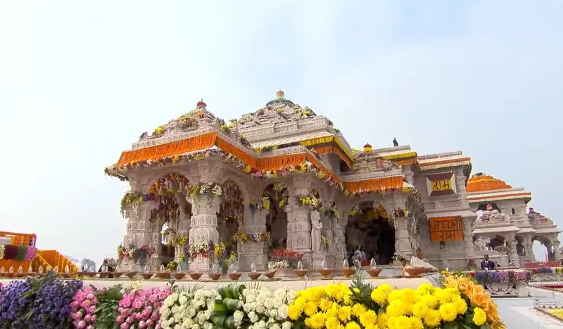

Home / Blog / Naimisharanya Yatra Guide

Situated along the banks of the Gomti River in Uttar Pradesh, Naimisharanya (Neemsar) is celebrated as the Sacred Forest of 88,000 Rishis. It is here that Maharshi Ved Vyas divided the Vedas and composed the 18 Puranas, Mahabharata, and Shrimad Bhagavatam.
A pilgrimage to Naimisharanya is considered mandatory to fulfill the spiritual merit of all 84 Lakh Yonis.
📍 Top Sacred Shrines in Naimisharanya Dham
Naimisharanya (popularly known as Neemsar) is situated in the Sitapur district of Uttar Pradesh. Spanning sacred groves where 88,000 rishis performed austerities, the key tirthas include:
- 1. Chakra Tirth (Kund): According to the Brahmanda Purana, when sages asked Lord Brahma where they should perform penance free from demonic disturbances, Brahma released his manomaya divine wheel (Chakra). The wheel struck the earth at this spot, creating a sacred circular water body. Taking a ritual bath here on Somvati Amavasya or full moon days is believed to cleanse lifetimes of sins.
- 2. Maa Lalita Devi Shakti Peeth: Revered as one of the 51 sacred Shakti Peeths, this is the holy spot where the heart (Hriday) of Devi Sati fell. Pilgrims offer red chunari, flowers, and coconut for fulfillment of desires and health blessings.
- 3. Vyas Gaddi: The sacred seat of Maharishi Veda Vyasa, located beneath a 5,000-year-old banyan tree. It is here that Vyasa codified the four Vedas, composed the 18 Mahapuranas, the Mahabharata, and Shrimad Bhagavatam, and narrated them to his son Shukadeva.
- 4. Suta Gaddi: The holy assembly place where Romaharshana and his son Ugrasrava Sauti recited the Puranas to the assembly of 88,000 sages headed by Shaunaka Rishi.
- 5. Hanuman Garhi (Dakshinamukhi Hanuman): A historic hilltop shrine depicting Lord Hanuman carrying Shri Ram and Lakshman on his shoulders after slaying Ahiravana in Patal Loka. Devotees face south while praying here.
- 6. Dadhichi Kund (Mishrikh): Located 10 km from Naimisharanya in Mishrikh town, this is the sacred lake where Maharshi Dadhichi bathed in the waters of all holy rivers before donating his bones to Indra to craft the Vajra weapon that defeated the demon Vritrasura.
⏰ Darshan & Temple Timings
- Chakra Tirth Snan & Complex: Open daily 05:00 AM – 08:00 PM. Best snan timings are between 05:30 AM and 08:00 AM.
- Maa Lalita Devi Mandir: 06:00 AM – 12:30 PM (Morning), 02:00 PM – 09:00 PM (Evening). Grand evening aarti at 07:30 PM.
- Vyas Gaddi & Suta Gaddi: 06:00 AM – 07:30 PM daily.
🚗 How to Travel to Naimisharanya (Neemsar)
- From Lucknow: 85 km (approximately 2 to 2.5 hours via NH-24 and Sandila/Sitapur road). Best covered as a comfortable same-day private cab excursion from Lucknow.
- From Ayodhya: 215 km (approx 4.5 hours drive via Lucknow Ring Road and Sitapur Highway). Many devotees combine Ayodhya, Naimisharanya, and Lucknow in a 4-day circuit.
- Nearest Railway Station: Sandila (35 km) or Sitapur (38 km). Lucknow Junction (85 km) offers the best nationwide rail connectivity.
- Nearest Airport: Chaudhary Charan Singh International Airport, Lucknow (LKO), 95 km away.
❓ Naimisharanya Yatra FAQs
1. Can Naimisharanya be covered in one day?
Yes, absolutely. A same-day private AC cab journey from Lucknow starting at 7:00 AM allows you to reach by 9:30 AM, complete Chakra Tirth snan, Lalita Devi darshan, Vyas Gaddi, and Hanuman Garhi by 3:00 PM, and return to Lucknow by 6:00 PM.
2. What should pilgrims pack for Chakra Tirth?
Bring clean traditional clothes (dhoti/kurta or saree), towel for the holy bath, and slip-on footwear. Changing rooms are available near the kund.
🛕 Book Naimisharanya Tour Package Today
Book private AC cab transfers from Lucknow or Ayodhya with dedicated local guide and hotel stay.